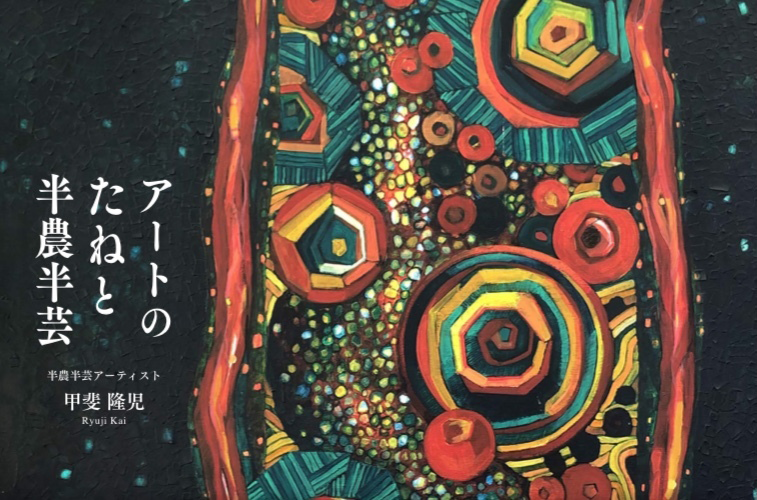

アートのたねと半農半芸
九州大学大学院 芸術工学府 緑地保全研究室所属 研究生 甲斐隆児
農家が種を植え育て作物をつくるように、ぼくは“アートのたねを育てて、作品につなげています。こ れが半農半芸アーティストとしてのぼくの”アートのつくり方“です。宮崎のアートのたねとアートの つくり方を紹介した冊子です。
新しい表現に「移る」
今回の大芸工展のテーマ「うつる」。ぼくの場合は「移る」です。これまで自作の油絵は作品展や SNSで発表する程度で、あまり発信を意識していませんでした。ただ絵を紹介するだけでなく、作品制作の創 意工夫や試行錯誤、作品に込めたモノを発信しては?と思いはじめ、行きたいところに行けない、会いたい人に会えない事態を経験し、作品展を冊子で表現するイメージで『アートのたねと半農半芸』を制作しました。ぼくにとって新しい表現・カタチに「移」った、挑戦した第一作です。どうぞご覧ください。
プロフィール
宮崎県日向市出身。里地・里山や緑地の保全活動等に関わりながら、地方や地域のアート性、内包アー トの表現や発信について模索中。
甲斐 隆児
かい りゅうじ
九州大学大学院 芸術工学府 緑地保全研究室 研究生